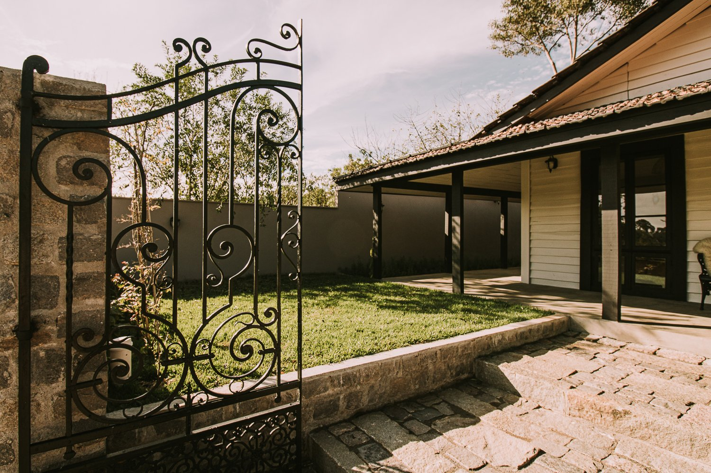
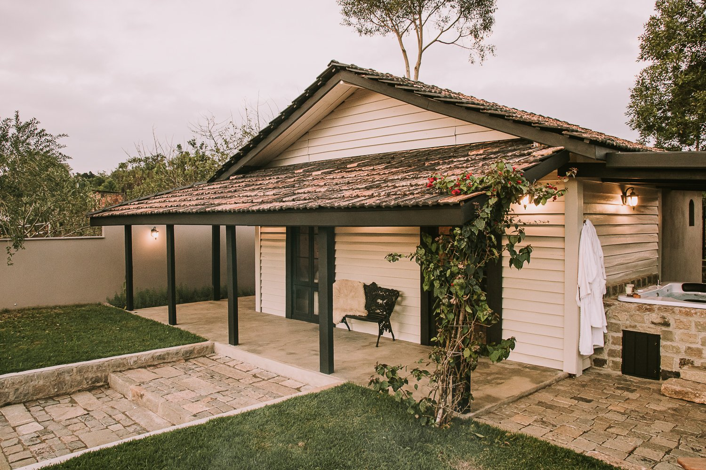
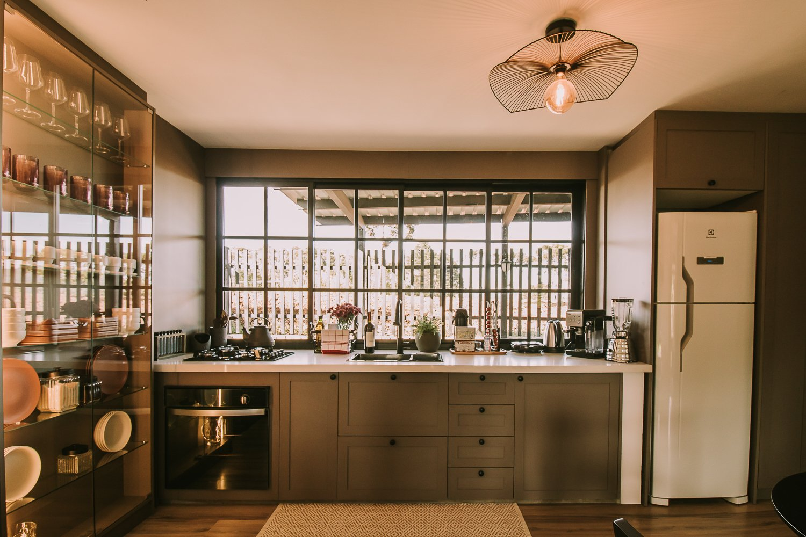
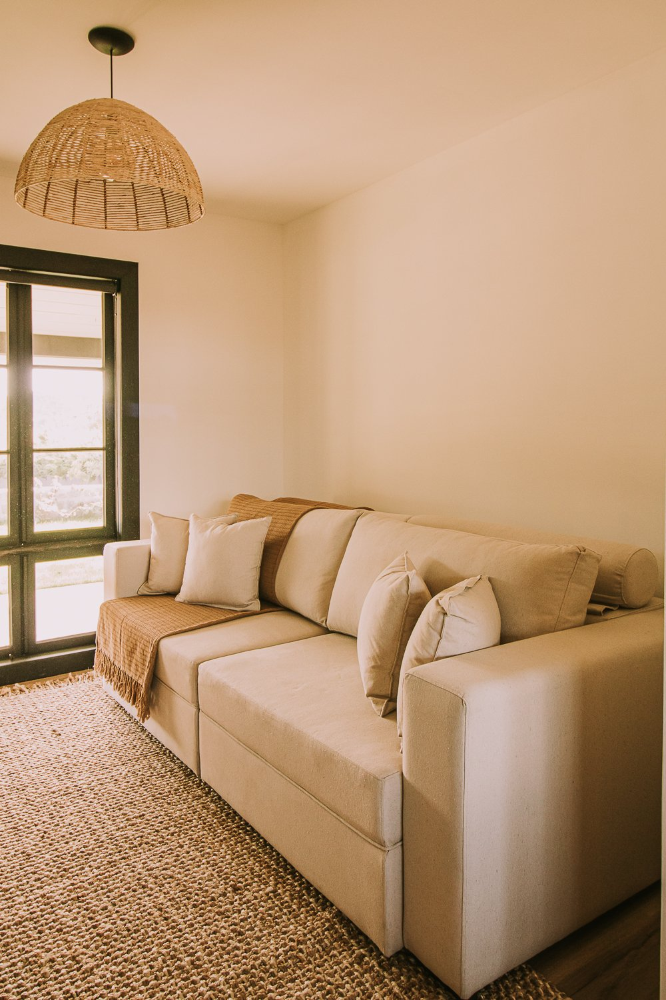
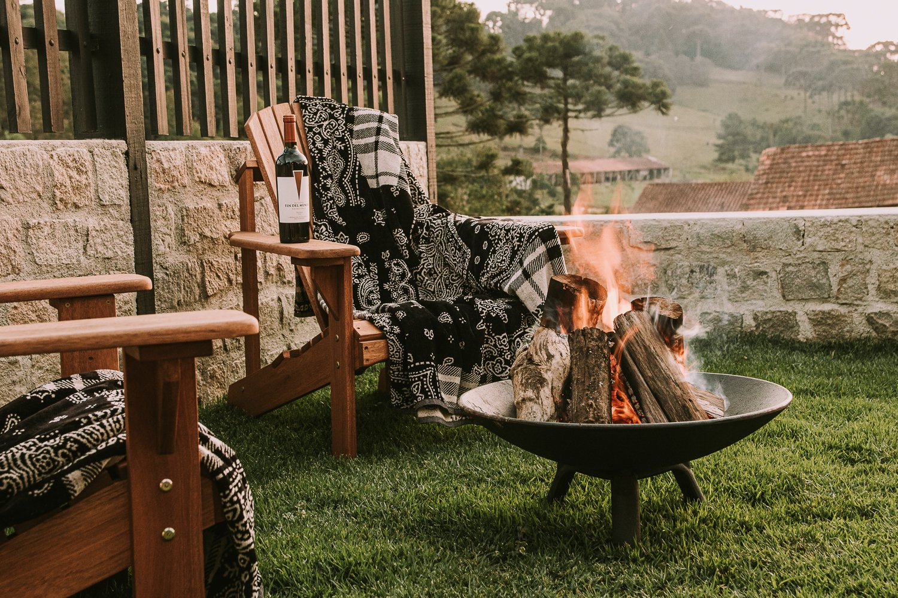

01 — A CHEGADA
Um caminho para desacelerar.
O portão se abre e a casa começa a se revelar.

Decorelas Casa de Campo
Troque a pressa por dias vividos com mais calma.
01 — A CASA
Entre madeira, pedra e luz natural, cada detalhe convida a deixar a pressa do lado de fora. A Decorelas é um lugar para aproveitar a casa com mais calma.
Conheça os ambientesUM CONVITE A FICAR

01 — A CHEGADA
O portão se abre e a casa começa a se revelar.

02 — A FACHADA
Madeira, pedra e o desenho da varanda acolhem o olhar.

03 — A COZINHA
Na cozinha, a janela aproxima o interior da paisagem.

04 — A SALA
Texturas naturais e luz suave convidam a permanecer.

05 — LÁ FORA
Uma pausa para olhar a paisagem e ficar mais um pouco.
Conheça as reservas